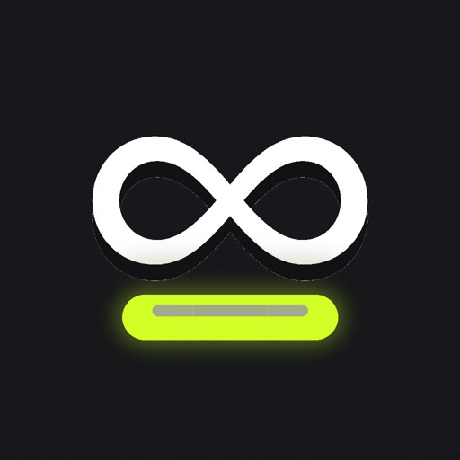

InfiniWake is a lightweight menu-bar utility. Toggle keep-awake with a hotkey (F4 by default), see status via the Caps Lock LED and ∞ in the menu bar, and optionally set an auto-off timer.

macOS 13+ · universal (arm64 + x86_64) · MIT
F4 by default; Caps Lock, F1–F12, and other shortcuts in Settings.
Use the physical LED as a keep-awake indicator — without real CAPS typing.
∞ unlimited or auto-off from 15 minutes to 8 hours, with countdown in the menu bar.
∞, lamp, or ∞+lamp — pick in Settings; changes apply immediately.